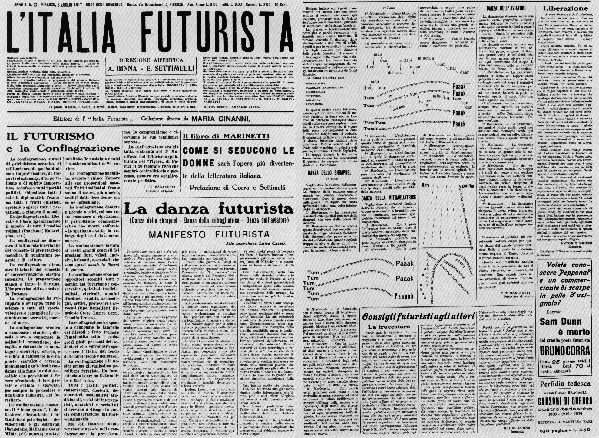

IL FUTURISMO
Il futurismo è un'avanguardia storica di matrice totalmente italiana.
Divenne in breve tempo il movimento artistico di maggior novità nel panorama culturale italiano.
Si rivolgeva a tutte le arti, comprendendo sia poeti che pittori, scultori, musicisti, e così via, proponendo in sostanza un nuovo atteggiamento nei confronti del concetto stesso di arte.
Ciò che il futurismo rifiutava era il concetto di un'arte èlitaria e decadente, confinata nei musei e negli spazi della cultura aulica.
Proponeva invece un balzo in avanti, per esplorare il mondo del futuro, fatto di parametri quali la modernità contro l'antico, la velocità contro la stasi, la violenza contro la quiete, e cos⇉ via.
Il fenomeno del futurismo ha quindi una spiegazione genetica molto chiara.
La cultura dell'Ottocento era stata troppo condizionata dai modelli storici.
Il passato, specie in Italia, era divenuto un vincolo dal quale sembrava impossibile affrancarsi.
Oltre ciò, la tarda cultura ottocentesca si era anche caratterizzata per quel decadentismo che proponeva un'arte fatta di estasi pensose quale fuga dalla realtà nel mondo dei sogni.
Contro tutto ciò insorse il futurismo, cercando un'arte che esprimesse vitalità e ottimismo per costruire un mondo nuovo basato su una nuova estetica appoggiando l'idea di progresso.

La contestazione, che risulta dal manifesto tecnico della letteratura futuristica, si propone di colpire le strutture stesse della comunicazione ideologica, costituite dal linguaggio.
La letteratura si era sempre basata su un immpianto concettuale, al quale aveva affidato i suoi messaggi; il futurismo respinge ogni forma consueta di casualità e di consequenzialità, sostituendo, all'impianto logico del pensiero, una forma più sintetica e abbreviata, quella dell'analogia.
Un'analogia che accosta e assimila realtà diverse e lontanissime tra di loro, anche attraverso l'uso della sinestesia e dell'onomatopea.
Il rifiuto della logica tradizionale ha anche il proposito di distruggere la sintassi, che riflette l'ordine consequenziale di un pensiero rigorosamente concatenato.
Vengono aboliti anche i tradizionali elementi di interpunzione, che scandivano i rapporti interni della frase, con lo scopo di suggerire il fluire ininterrotto delle sensazioni, la rapidità folgorante dei passaggi, il compenetrarsi "analogico" tra i diversi piani del reale.
Alla distruzione della sintassi si sostituisce la teoria delle parole in libertà, che consiste nel disporre i sostantivi a caso, come nascono.
La parola vale non solo per l'immagine mentale che pu⊶ suggerire, ma anche come segno concretamente visibile, destinato a sua volta a produrre impressioni acustiche o tattili, come se la parola producesse suoni che si ascoltano o realtà che si toccano.